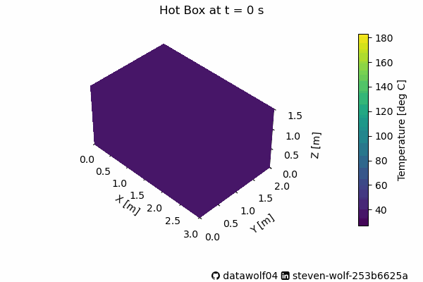
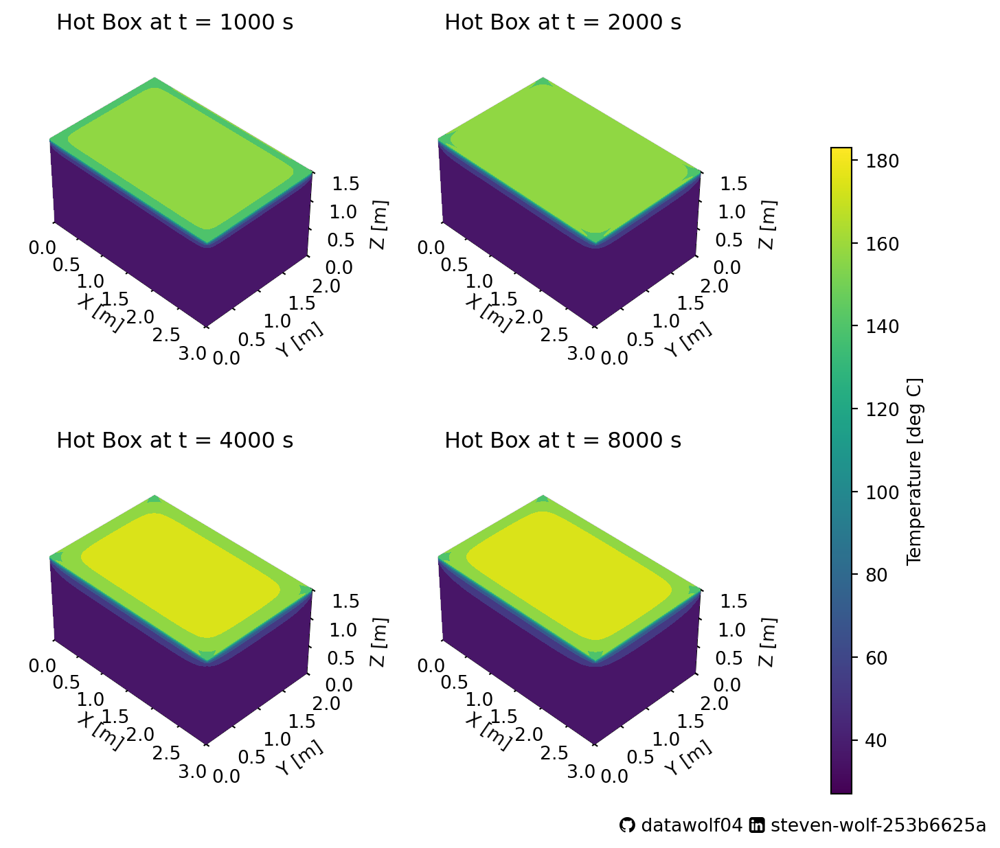

Code
import numpy as np
import matplotlib.pyplot as plt
import matplotlib.colors as mc
import matplotlib.cm as cm
from scipy.integrate import solve_ivp
# The functions in `hotBoxToy` were developed in the previous post
from hotBoxToy import *Steven Wolf
December 10, 2024
I’ve been recently modeling a simple system using the heat equation. That last post was full of math, and finally got to making a nice looking visualization. But it was a long time to get there, and I wanted a post that got to the “pretty pictures” part much faster. Plus, I needed to spend time figuring out how to make them look nice. When the “do math” part of my brain fights with the “make it look good” part of my brain, the math part wins because if the math part loses, the looking good part doesn’t matter (because it’s probably wrong). But the “make it look good” part is equally important for good scientific communication. Therefore, this post is important too, and hopefully, more readable that the previous post.
As I wanted to get solar heat generation working, I started by making it simple. The premise was this. Consider the following information from The Humane Society.
- When it’s 72 degrees Fahrenheit outside, the temperature inside your car can heat up to 116 degrees Fahrenheit within an hour.
- When it’s 80 degrees Fahrenheit outside, the temperature inside your car can heat up to 99 degrees Fahrenheit within 10 minutes.
- Rolling down the windows has been shown to have little effect on the temperature inside a car.
Assume the above information is correct, and find appropriate parameters to make it so. I did that by assuming the sun is at solar noon (directly overhead) and we are getting direct sunlight at our particular latitude (so it is solar noon on the equinox/first day of spring/fall).
But that previous post was full of math, and I wanted to make some visualizations to show how the temperature changed. So I decided to simulate for a longer time and build some cool visuals. Since the time window is 10 hours, this is a bit of a “toy model.” (In physics, we call something a toy model when it has a feature that is clearly unrealistic, but helps us develop our intuition for a system, better understand how a key aspect effects a system, and/or develop tools for visualizing or analyzing a system.) But it should give me something to visualize. Later (not in this post) I will do some astrophysics to get the sun moving properly, and handle the latitude correctly so I can come back to earth.
Import block:
Parameters are input in the code below, and the simulation runs based on the fit parameters from the previous analysis
# Heat parameters
thermalDiffusivity = 22.39e-6 # meters^2/s for air
heatTransferCoef = 1 # For a typical metal to air W/m^2K
thermalConductivity = 50 # For a typical metal W/mK
specificHeat = 1000 # for aluminum J/kg K
wallDensity = 3000 # kg/m^3 for aluminum
wallThickness = 0.002 # m
solarIntensity = 1000 # W/m^2
# Length parameters (meters)
L = 3
W = 2
H = 1.5
Deltax = 0.05
xmax = int(L/Deltax)
ymax = int(W/Deltax)
zmax = int(H/Deltax)
xmid = xmax // 2
ymid = ymax // 2
zmid = zmax // 2
xgrid = np.linspace(0,L,xmax+1)
ygrid = np.linspace(0,W,ymax+1)
zgrid = np.linspace(0,H,zmax+1)
u0 = np.empty((xmax,ymax,zmax))
oneHour = 3600
# Best parameters from previous simulation
A = 1.1176e-3
B = 6.6667e-3
longCalc = simToyHotBox(A,B,oneHour*10, 100) And now we have the pretty pictures. First we can observe how the heat changes in time.
 Many of the changes in this animation happens fast. As the Humane society stated, the car gets very hot, very fast. Please don’t leave your pets/kids/anything alive in a car baking in the sunlight. In fact, fellow Valparaiso University Beacon, Matthew Standridge used his van for baking cookies and cinnamon buns. I hope they were tasty!
Back to this system–Below is a figure with 4 heatmaps on it showing the system at four times that are during this change in behavior.
timeIdx = [10, 20, 40, 80]
xm, ym, zm = u0.shape
Y,X,Z = np.meshgrid(np.linspace(0,W,ym),np.linspace(0,L,xm),np.linspace(0,H,zm))
kw = {
'vmin': longCalc.y.min(),
'vmax': longCalc.y.max(),
'levels': np.linspace(longCalc.y.min(),longCalc.y.max(), 10),
}
cnorm = mc.Normalize(vmin=longCalc.y.min(),vmax=longCalc.y.max())
cbar = cm.ScalarMappable(norm=cnorm)
# Set limits of the plot from coord limits
xmin, xmax = 0, L
ymin, ymax = 0, W
zmin, zmax = 0, H
xt = np.arange(0,L+0.5,0.5)
yt = np.arange(0,W+0.5,0.5)
zt = np.arange(0,H+0.5,0.5)
i = 0
fig = plt.figure(figsize=(8,7))
cellList = [221,222,223,224]
for cell in cellList:
l = timeIdx[i]
theTime = longCalc.t[l]
theTitle = f'Hot Box at t = {theTime:.0f} s'
umatFlat = longCalc.y[:,l]
umat = umatFlat.reshape((xm,ym,zm))
ax = fig.add_subplot(cell, projection='3d')
# Set title, limits, and labels
ax.set_title(theTitle)
ax.set(xlim=[xmin, xmax], ylim=[ymin, ymax], zlim=[zmin, zmax],xlabel='X [m]',ylabel='Y [m]',zlabel='Z [m]',
xticks=xt,yticks=yt,zticks=zt)
# Set zoom and angle view
ax.view_init(40, -45, 0)
ax.set_box_aspect((xm,ym,zm), zoom=0.85)
ax.contourf(X[:, :, -1], Y[:, :, -1], umat[:, :, -1],
zdir='z', offset=H, **kw)
ax.contourf(X[:, 0, :], umat[:, 0, :], Z[:, 0, :],
zdir='y', offset=0, **kw)
ax.contourf(umat[-1, :, :], Y[-1, :, :], Z[-1, :, :],
zdir='x', offset=L, **kw)
i += 1
ghLogo = u"\uf09b"
liLogo = u"\uf08c"
txt = f"{ghLogo} datawolf04 {liLogo} steven-wolf-253b6625a"
fig.subplots_adjust(bottom=0.05,right=0.8)
plt.figtext(0.7,0.01, txt,family=['DejaVu Sans','FontAwesome'],fontsize=10)
cbar_ax = fig.add_axes([0.9, 0.05, 0.02, 0.7])
fig.colorbar(cbar, cax=cbar_ax,label='Temperature [deg C]')
plt.show()
These show a few features of importance:
Figuring out how to do the animation was an interesting task, especially since most of the examples in the documentation animate things like a position vs. time graph, showing where the object appears later in the motion, and dealing with 3d plots is different in matplotlib. The key to using this method for animating a figure is to name all of the features of the graph that are changing, and creating a function to update each of these features.
import matplotlib.animation as animation
def makeAni(fname,res,L,W,H,dx):
print("Building the animation")
# Create figure with 3D axes
fig = plt.figure(figsize=(6,4))
ax = fig.add_subplot(111, projection='3d')
# Fill in the plot
theTime = res.t[0]
tmax = len(res.t)
theTitle = f'Hot Box at t = {theTime:.0f} s'
figTitle = fig.suptitle(theTitle)
xm, ym, zm = int(L/dx), int(W/dx), int(H/dx)
uflat = res.y[:,0]
umat = uflat.reshape((xm,ym,zm))
Y,X,Z = np.meshgrid(np.linspace(0,W,ym),np.linspace(0,L,xm),np.linspace(0,H,zm))
kw = {
'vmin': res.y.min(),
'vmax': res.y.max(),
'levels': np.linspace(res.y.min(),res.y.max(), 10),
}
cnorm = mc.Normalize(vmin=res.y.min(),vmax=res.y.max())
cbar = cm.ScalarMappable(norm=cnorm)
# Plot contour surfaces
topSurf = ax.contourf(X[:, :, -1], Y[:, :, -1], umat[:, :, -1], zdir='z', offset=H, **kw)
frontSurf = ax.contourf(X[:, 0, :], umat[:, 0, :], Z[:, 0, :], zdir='y', offset=0, **kw)
leftSurf = ax.contourf(umat[-1, :, :], Y[-1, :, :], Z[-1, :, :], zdir='x', offset=L, **kw)
# --
# Set limits of the plot from coord limits
xmin, xmax = 0, L
ymin, ymax = 0, W
zmin, zmax = 0, H
ax.set(xlim=[xmin, xmax], ylim=[ymin, ymax], zlim=[zmin, zmax])
# Set labels
ax.set(
xlabel='X [m]',
ylabel='Y [m]',
zlabel='Z [m]',
xticks = np.arange(0,L+0.5,0.5),
yticks = np.arange(0,W+0.5,0.5),
zticks = np.arange(0,H+0.5,0.5),
)
# Set zoom and angle view
ax.view_init(40, -45, 0)
ax.set_box_aspect((xm,ym,zm), zoom=1)
# Colorbar
fig.subplots_adjust(left=-1.75,bottom=0.2,right=0.9)
fig.colorbar(cbar, ax=ax, fraction=0.02, pad=0.075,
label='Temperature [deg C]')
ghLogo = u"\uf09b"
liLogo = u"\uf08c"
txt = f"{ghLogo} datawolf04 {liLogo} steven-wolf-253b6625a"
plt.figtext(0.5,0.01, txt,family=['DejaVu Sans','FontAwesome'],fontsize=10)
def update(l):
if (l+1)%10==0:
print(f"Working on frame {l+1} out of {tmax}.")
uflat = res.y[:,l]
umat = uflat.reshape((xm,ym,zm))
theTime = res.t[l]
theTitle = f'Hot Box at t = {theTime:.0f} s'
figTitle = fig.suptitle(theTitle)
topSurf = ax.contourf(X[:, :, -1], Y[:, :, -1], umat[:, :, -1], zdir='z',
offset=H, **kw)
frontSurf = ax.contourf(X[:, 0, :], umat[:, 0, :], Z[:, 0, :], zdir='y',
offset=0, **kw)
leftSurf = ax.contourf(umat[-1, :, :], Y[-1, :, :], Z[-1, :, :],
zdir='x', offset=L, **kw)
return topSurf, frontSurf, leftSurf, figTitle
ani = animation.FuncAnimation(fig=fig, func=update, frames=tmax,
interval=50, repeat=False)
ani.save(fname,writer='pillow')
# Builds the animation
makeAni('hotboxLong.gif',longCalc,L,W,H,Deltax)